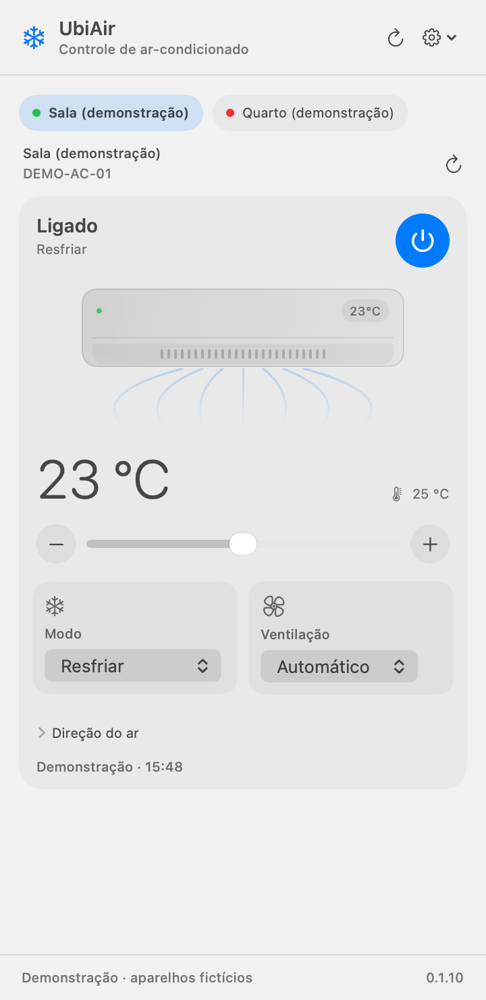
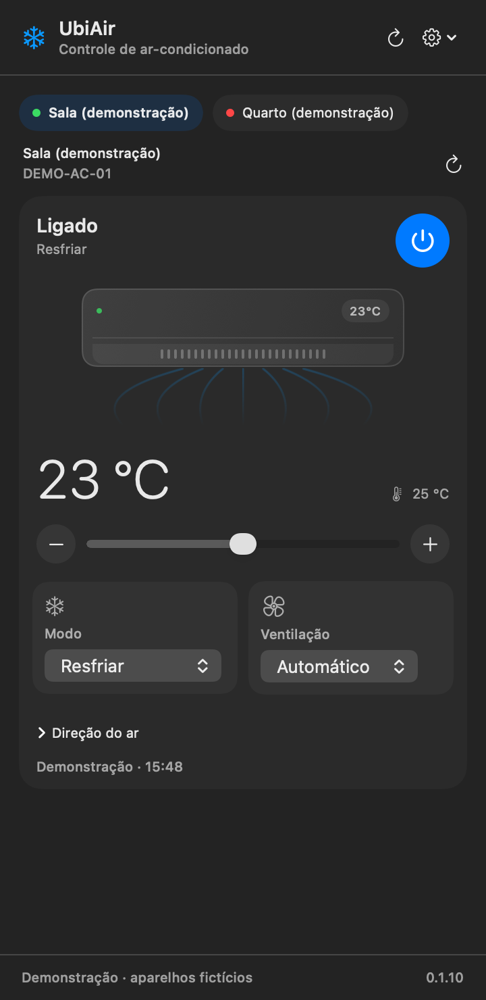
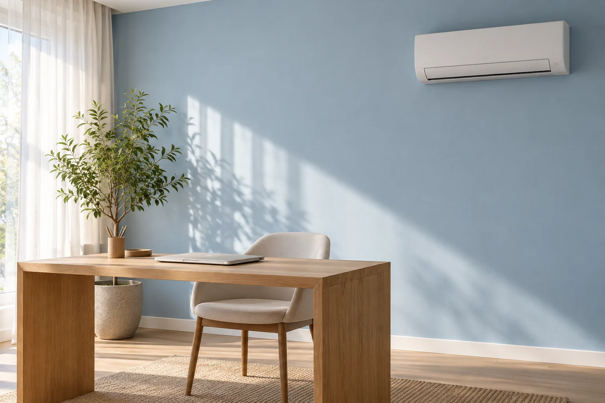
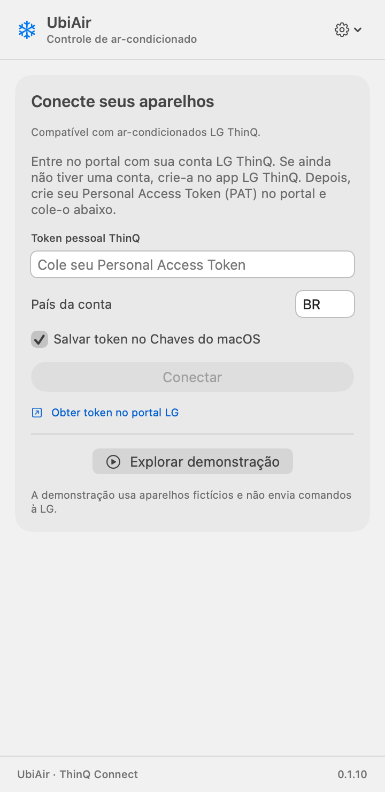
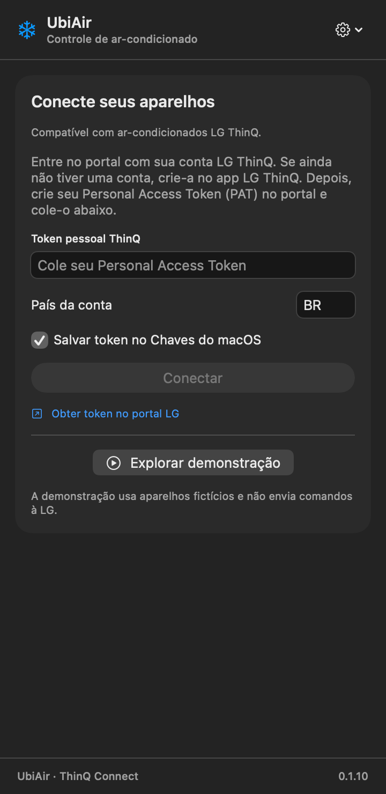
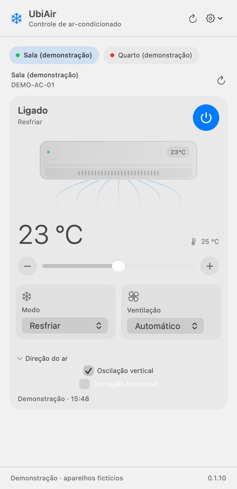
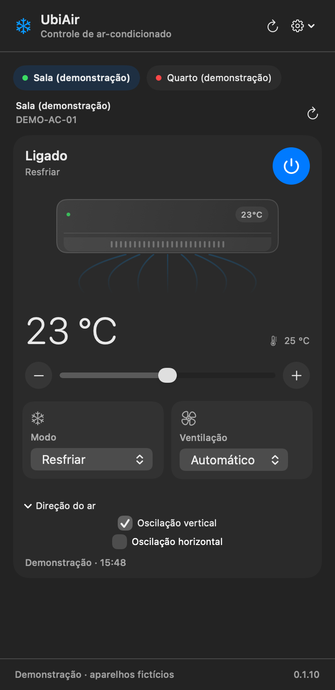

Seu ar.
No seu Mac.
Controle seu ar-condicionado LG ThinQ na barra de menus, sem interromper o que você está fazendo.
Começar no MacNativo para macOS.
Código aberto, sob licença MIT.


Um clique no floco de neve.
Seu ambiente, sob controle.

O conforto fica por perto.
O trabalho continua.
O ajuste certo,
bem à mão
Energia
Ligue ou desligue o aparelho selecionado, direto no painel.
Temperatura
Veja a atual e escolha a desejada, com prévia ao arrastar o controle.
Modo de operação
Escolha entre as opções que o seu modelo oferece.
Ventilação
Ajuste a velocidade do ventilador entre os níveis disponíveis.
Direção do ar
Acesse as oscilações horizontal e vertical, quando compatíveis.
Seus ambientes
Alterne entre os aparelhos de ar-condicionado da sua conta.
Estado atualizado
Leitura ao abrir e a cada 30 segundos enquanto o painel está visível.
Comando confirmado
Uma nova leitura verifica o resultado. Se algo falhar, o app orienta a recuperação.
Os controles acompanham os recursos informados por cada aparelho à LG ThinQ.
Do seu jeito
De dia ou à noite, a mesma interface nativa.
Explore os controles e a direção do ar nos temas claro e escuro. O aplicativo acompanha a aparência do macOS.
Controles no tema claro. Captura da interface SwiftUI com aparelhos fictícios.
Esta prévia não envia comandos.
Do Mac ao
primeiro ajuste
Uma configuração pessoal.
Depois, é só abrir o painel.
-
Instale no Mac
Abra o projeto no Xcode, escolha o esquema UbiAir e o destino My Mac. Execute com ⌘R.
Ver instruções de instalação -

Prepare sua conta
Cadastre seu ar-condicionado no app LG ThinQ. Entre com a mesma conta no portal de tokens da LG.
Abrir o portal da LG (nova aba) -

Conecte o UbiAir
Gere um Personal Access Token (PAT) no portal. No UbiAir, informe o país da conta (BR para Brasil) e cole o token.
Você escolhe se quer salvá-lo no Chaves do macOS. Mantenha seu PAT privado.
-

Escolha o ambiente
Selecione o aparelho, confira o estado e faça o primeiro ajuste. Os controles disponíveis dependem do modelo.
Se quiser, ative Abrir ao iniciar sessão no menu da engrenagem.
Instalação pelo Xcode
O código está disponível agora. A distribuição pela Mac App Store ainda está em preparação.
Ambiente testado: Xcode 27.1 e macOS 27.0.1. O projeto define macOS 14 como mínimo, mas versões anteriores ao macOS 27 ainda não foram validadas.
Instale e abra o Xcode uma vez para concluir os componentes. Depois, no Terminal:
git clone https://github.com/alaorjr/UbiAir.git
cd UbiAir
open UbiAir.xcodeprojSelecione UbiAir → My Mac e pressione ⌘R. O build Debug usa assinatura local e dispensa uma conta Apple Developer.
Consultar o guia no GitHubAntes de começar
Um Mac, sua conta LG ThinQ
e uma conexão com a internet.
Funciona com qualquer ar-condicionado?
O UbiAir lista ar-condicionados da conta LG ThinQ que a API disponibiliza. Os modos, limites de temperatura e oscilações variam por modelo. Outros tipos de aparelho não aparecem no painel.
Preciso de internet?
Sim. O controle usa o serviço LG ThinQ Connect pela internet. A demonstração é offline, mas a operação dos seus aparelhos depende da LG e da conexão.
Onde fica meu token?
Se você escolher salvá-lo, o PAT fica no Chaves do macOS. O UbiAir faz as chamadas diretamente à LG, sem um servidor próprio e sem enviar suas credenciais ao desenvolvedor.
O painel fica atualizando o tempo todo?
Ele consulta o estado ao abrir e a cada 30 segundos enquanto está visível. Com o painel fechado, as leituras periódicas param. Comandos são verificados por leituras posteriores e não são reenviados automaticamente.
Já posso baixar na App Store?
A distribuição na loja ainda está em preparação. Por enquanto, você pode compilar pelo Xcode usando o código aberto. O guia acima explica como começar.

Um lugar
no seu Mac
O UbiAir nasceu da vontade de controlar o ar pelo computador. O código está disponível para você experimentar e contribuir.
Começar no Mac Ver o projeto no GitHub